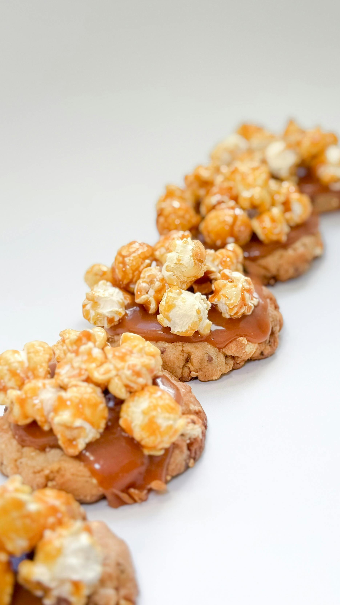

Home
Chicken Fried Chicken

Description
Popcorn cookies are a fun, textural treat that incorporates popped popcorn
into a sweet cookie dough, often with mix-ins like chocolate chips and
nuts, creating a delightful sweet-and-savory, crunchy-and-chewy snack.
Ingredients
Popcorn
- 1 tablespoon vegetable oil
- 2 tablespoons unpopped white popcorn kernels
- 1 tablespoon unsalted butter, melted
- 1 pinch salt
Cookie Dough
- 3/4 cup unsalted butter, softened
- 3/4 cup firmly packed light brown sugar
- 1/2 cup white sugar
- 1 teaspoon salt
- 1/8 teaspoon ground nutmeg
- 1 large egg, at room temperature
- 1 large egg yolk
- 2 teaspoons vanilla extract
- 1 3/4 cups all-purpose flour
- 1/4 teaspoon baking soda
- 1/4 teaspoon baking powder
- 1/2 cup chopped toasted pecans
- 1/2 cup white chocolate chips
Steps
-
Heat oil in a large skillet over medium heat. Add popcorn kernels. As
soon as one of the kernels pops, put a lid on the skillet and shake the
pan often. Continue to cook until most kernels have popped. Pour popped
popcorn into a bowl, and discard any unpopped or partially popped
kernels. Drizzle popcorn with melted butter and pinch of salt and toss
to coat.
-
Once popcorn is cool enough to handle, use your hands to break it into
pieces, about the size of a pea or smaller. This should yield
approximately 1 1/2 cups of crushed popcorn. Set aside.
-
Preheat the oven to 350 degrees F (180 degrees C). Line baking sheets
with parchment paper.
-
For cookie dough, beat 3/4 cup butter, brown sugar, white sugar, salt,
and nutmeg together in a large bowl until light and fluffy. Add egg, egg
yolk, and vanilla and beat until thoroughly incorporated. Add flour,
baking soda, and baking powder and mix until just combined. Fold in
crushed popcorn, pecans, and white chocolate chips.
-
Scoop out 1 1/2 tablespoon-sized balls of dough and place them 2 inches
apart on the prepared baking sheets.
-
Bake 1 pan at a time in the preheated oven until golden brown on the
bottom, 12 to 15 minutes.
-
Remove cookies from the oven and immediately place a large round cookie
cutter (slightly larger than the cookie) over the top of one of the
cookies and swirl it. Quickly but gently, swirl the cookie with the
cookie cutter until it is perfectly round and slightly thicker in
texture. Repeat this process with the remaining cookies, making sure to
work fast, as this must be done while the cookies are still hot out of
the oven (this process is known as “scooting” the cookies; see note).
-
Allow cookies to cool on the baking sheet for 5 minutes, then remove to
a wire rack to cool completely.